بسم الله الرحمن الرحيم
Sayyid Abul Ala Maududi - Tafhim al-Qur'an - The Meaning of the Qur'an
 66.
Surah At Tahrim (The Prohibition)
66.
Surah At Tahrim (The Prohibition)
The Surah derived its name from the words lima tuharrimu of the very first verse. This too is not a title of its subject matter, but the name implies that it is the Surah in which the incident of tahrim (prohibition, forbiddance) has been mentioned.
In connection with the incident of tahrim referred to in this Surah, the traditions of the Hadith mention two ladies who were among the wives of the Holy Prophet (upon whom be peace) at that time Hadrat Safiyyah and Hadrat Mariyah Qibtiyyah. The former (i. e. Hadrat Safiyyah) was taken to wife by the Holy Prophet after the conquest of Khaiber, and Khaiber was conquered, as has been unanimously reported, in A. H. 7. The other lady, Hadrat Mariyah, had been presented to the Holy Prophet by Muqawqis, the ruler of Egypt, in A. H. 7 and she had borne him his son, Ibrahim, in Dhil-Hijjah, A. H. 8.These historical events almost precisely determine that this Surah was sent down some time during A.H. 7 or A. H 8.
This is a very important Surah in which light has been thrown on some questions of grave significance with reference to some incidents concerning the wives of the Holy Prophet (upon whom be Allah's peace).
First, that the powers to prescribe the bounds of the lawful and the unlawful, the permissible and the forbidden, are entirely and absolutely in the hand of Allah and nothing has been delegated even to the Prophet of Allah himself, not to speak of any other man. The Prophet as such can declare something lawful or unlawful only if he receives an inspiration from Allah to do so whether that inspiration is embodied in the Qur'an, or imparted to, him secretly. However, even the Prophet is not authorized to declare anything made permissible by Allah unlawful by himself, much less to say of another man.
Second, that in any society the position of a Prophet is very delicate. A minor incident experienced by an ordinary man in his life may not be of any consequence, but it assumes the status of law when experienced by a Prophet. That is why the lives of the Prophets have been kept under close supervision by Allah so that none of their acts, not even a most trivial one, may deviate from Divine Will. Whenever such an act has emanated from a Prophet, it was rectified and rectified immediately so that the Islamic law and its principles should reach the people in their absolute purity not only through the Divine Book but also through the excellent example of the Prophet, and they should include nothing which may be in disagreement with Divine Will,
Thirdly, and this automatically follows from the above mentioned point, that when the Holy Prophet (upon whom be peace) was checked on a minor thing, which was not only corrected but also recorded, it gives us complete satisfaction that whatever actions and commands and instructions we now find in the pure life of the Holy Prophet concerning which there is nothing on record in the nature of criticism or correction from Allah, they are wholly based on truth, are in complete conformity with Divine Will and we can draw guidance from them with full confidence and peace of mind.
The fourth thing that we learn from this discourse is that about the Holy Messenger himself, whose reverence and respect Allah Himself has enjoined as a necessary part of the Faith of His servants, it has been stated in this Surah that once during his sacred life he made a thing declared lawful by Allah unlawful for himself only to please his wives; then Allah has severely reproved for their errors those very wives of the Holy Prophet, whom He Himself has declared as mothers of the faithful and worthy of the highest esteem and honor by them. Then, this criticism of the Prophet and the administration of the warning to the wives also has not been made secretly but included in the Book, which the entire Ummah has to read and recite for ever. Obviously, neither the intention of making mention of it in the Book of Allah was, nor it could be, that Allah wanted to degrade His Messenger and the mothers of the faithful in the eyes of the believers; and this also is obvious that no Muslim has lost respect for them, in his heart after reading this Surah of the Qur'an. Now, there cannot be any other reason of mentioning this thing in the Qur'an than that Allah wants to acquaint the believers with the correct manner of reverence for their great personalities. The Prophet is a Prophet, not God, that he may commit no error. Respect of the Prophet has not been enjoined because he is infallible, but because he is a perfect representative of Divine Will, and Allah has not permitted any of his errors to pass by unnoticed. This gives us the satisfaction that the noble pattern of life left by the Prophet wholly and fully represents the will of Allah. Likewise, the Companions of the holy wives of the Prophet, were human, not angels or super men. They could commit mistakes. Whatever ranks they achieved became possible only because the guidance given by Allah and the training imparted by Allah's Messenger had moulded them into the finest models. Whatever esteem and reverence they deserve is on this very basis and not on the presumption that they were infallible. For this reason, whenever in the sacred lifetime of the Prophet (upon him be peace) the Companions or holy wives happened to commit an error due to human weakness, they were checked. Some of their errors were corrected by the Holy Prophet, as has been mentioned at many places in the Hadith; some other errors were mentioned in the Qur'an and Allah Himself corrected them so that the Muslims might not form any exaggerated notion of the respect and reverence of their elders and great men, which might raise them from humanity to the position of gods and goddesses. If one studies the Quran carefully, one will see instances of this one after the other. In Surah Al-Imran, in connection with the Battle of Uhud, the Companions have been addressed and told:
"Allah did fulfill His promise (of help) to you : in the initial stage of the battle, it was you who were killing them by Allah's leave until you lost heart and disputed about your duty and disobeyed your leader, when Allah showed you what (the spoils) you coveted for there were among you sortie who hankered after the life of this world, and others: who cherished the life after death. Then Allah caused your retreat before the disbelievers in order to test you, but the fact is that even then Allah pardoned you, for Allah is very gracious to the believers." (v. 152).
In surah An-Nur, in connection with the Slander against Hadrat Aisha, the Companions were told,
"When you heard of it, why did not the believing men and the believing women have a good opinion of themselves, and why did they not say: this is a manifest slander?......Were it not for Allah's grace and mercy towards you in this world and in the Hereafter, a painful scourge would have visited you because of the slander. (Just consider) when you passed this lie on from one tongue to the other and uttered with your mouths that of which you had no knowledge. You took it as a trifling matter whereas it was a grave offense in the sight of Allah. Why did you not, as soon as you heard of it, say 'It is not proper for us to utter such a thing? Glory be to Allah! This is a great slander'."Allah admonishes you that in future you should never repeat anything like this, if you are true believers." (vv. 12-I7).
In surah Al-Ahzab, the holy wives have been addressed thus: "O Prophet, say to your wives If you seek the world and its adornments, come, I shall give you of these and send you off in a good way. But if you seek Allah and His Messenger and the abode of the Hereafter, you should rest assured that Allah has prepared a great reward for those of you, who do good." (vv. 28-29).
In Surah Jumu'ah about the Companions it was said:
"And when they saw some merchandise and amusement they broke off to it and left you (O Prophet) standing (in the course of the Sermon). Say to them : that which is with Allah is far better than amusement and merchandise, and Allah is the best of all providers." (v. 11).
In Surah Al-Mumtahinah, Hadrat Hatib bin Abi Balta'ah, a Companion who had fought at Badr, was severely taken to task because he had sent secret information to the disbelieving Quraish about the Holy Prophet's invasion before the conquest of Makkah.
All these instances are found in the Qur'an itself, in the same Qur'an in which Allah Himself has paid tribute to the Companions and the holy wives for their great merits, and granted them the certificate of His good pleasure, saying: "Allah became well pleased with them and they with Allah." It was this same moderate and balanced teaching of the reverence and esteem of the great men, which saved the Muslims from falling into the pit of man worship in which the Jews and the Christians fell, and it is a result of the same that in the books that the eminent followers of the Sunnah have compiled on the subjects of the Hadith, Commentary of the Qur'an and History, not only have the excellences and great merits of the Companions and holy wives and other illustrious men been mentioned, but also no hesitance has been shown in mentioning the incidents relating to their weaknesses, errors and mistakes, whereas those scholars were more appreciative of the merits and excellences of the great men and understood the bounds and limits of reverence better than those who claim to be the upholders of reverence for the elders today.
The fifth thing that has been explicitly mentioned in this Surah is that Allah's Religion is absolutely fair and just. It has for every person just that of which he becomes worthy on the basis of his faith and works. No relationship or connection even with the most righteous person can be beneficial for him in any way and no relationship or connection with the most evil and wicked person can be harmful for him in any way. In this connection three kinds of women have been cited as examples before the holy wives in particular. One example is of the wives of the Prophets Noah and Lot, who, if they had believed and cooperated with their illustrious husbands, would have occupied the same rank and position in the Muslim community. which is enjoyed by the wives of the Holy Prophet Muhammad (upon whom be Allah's peace and blessings). But since they were disbelievers, their being the wives of the Prophets did not help them and they fell into Hell. The second example is of the wife of Pharaoh, who in spite of being the wife of a staunch enemy of God believed and chose a path of action separate from that followed by the Pharaoh's people, and her being the wife of a staunch disbeliever did not cause her any harm, and Allah made her worthy of Paradise. The third example is of Hadrat Maryam (Mary) (peace be upon her), who attained to the high rank because she submitted to the severe test to which Allah had decided to put her. Apart from Mary no other chaste and righteous girl in the world ever has been put to such a hard test that in spite of being unmarried, she might have been made pregnant miraculously by Allah's command and informed what service her Lord willed to take from her. When Hadrat Maryam accepted this decision, and agreed to bear, like a true believer, everything that she inevitably had to bear in order to fulfill Allah's will, then did Allah exalt her to the noble rank of Sayyidatu an-nisa' fil- Jannah: "Leader of the women in Paradise" (Musnad Ahmad).
Besides, another truth that we learn from this Surah is that the Holy Prophet (upon whom be peace) did not receive from Allah only that knowledge which is included and recorded in the Qur'an, but he was given information about other things also by revelation, which has not been recorded in the Qur'an. Its clear proof is verse 3 of this Surah. In it we are told that the Holy Prophet (upon whom be peace) confided a secret to one of his wives, and she told it to another. Allah informed the Holy Prophet of this secret. Then, when the Holy Prophet warned his particular wife on the mistake of disclosure and she said:"Who has informed you of this mistake of mine7" he replied: "I have been informed of it by Him Who knows everything and is All Aware." Now, the question is where in the Qur'an is the verse in which Allah has said "O Prophet, the secret that you had confided to one of your wives, has been disclosed by her to another person, or to so and so?If there is no such verse in the Qur'an, and obviously there is none, this is an express proof of the fact that revelation descended on the Holy Prophet besides the Qur'an as well. This refutes the claim of the deniers of Hadith, who allege that nothing was sent down to the Holy Prophet (upon whom be peace) apart from the Qur'an.
In the name of Allah, the Compassionate, the Merciful.
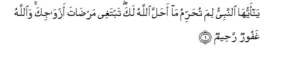
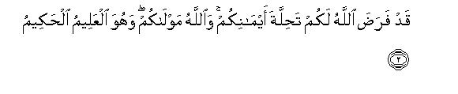
[1-2] O Prophet, why do you make unlawful that which Allah has permitted for you?1 (Is it because) you seek the good-will of your wives?2 Allah is All-Forgiving All Merciful.3 Allah has already appointed a way to absolve you (people) from your oaths.4 Allah is your Master, and He alone is the All-Knowing, the All-Wise.5
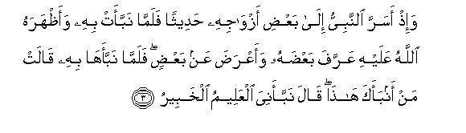
[3] (And this also is noteworthy that) the Prophet had confided a matter to a wife in secret. Then, when she disclosed the secret (to another), and Allah informed the Prophet (of the disclosure of the secret), the Prophet made known (to the wife) part of it and overlooked part of it. So when the Prophet told her (of the disclosure), she asked, "Who informed you of this?" The Prophet said, "I was informed by Him Who knows everything and is All-Aware."6
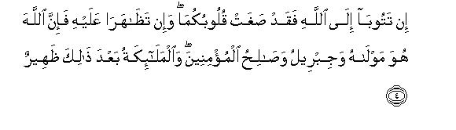
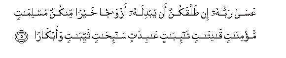
[4-5] If you both (women) repent to Allah, (it is better for you), for your hearts have swerved from the right path7 and if you supported each other against the Prophet,8 you should know that Allah is his Protector, and after Him Gabriel and the righteous believers and the angels are his companions and helpers.9 It may well be that if the Prophet divorces all of you, Allah will give him in your place better wives,10 who are true Muslims, who are believing11 and obedient,12 penitent,13 worshiping,14 and given to fasting,15 be they previously married or virgins.
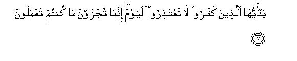
[6-7] O you who have believed, save yourselves and your households from a Fire whose fuel shall be the men and the stones,16 over which shall be appointed fierce and stern angels, who never disobey Allah's Command and do as they are commanded.17 (At that time it will be said:) "O disbelievers, do not make excuses today. You are being recompensed only for what you were doing."18
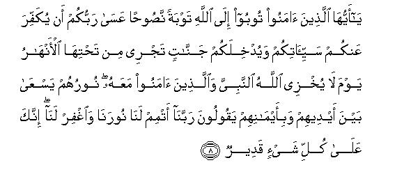
[8] O you who have believed, turn to Allah in sincere repentance.19 (It may well be that) Allah will remove your evils from you and admit you into Gardens underneath which rivers will be flowing.20 It will be a Day when Allah will not humiliate His Prophet and those who have believed with him.21 Their light shall be running on before them and on their right hands, and they will be saying, "O our Lord, perfect our light for us and forgive us: You have power over all."22
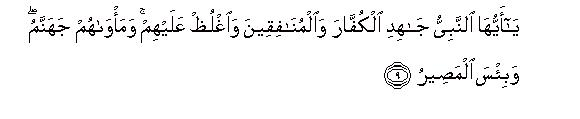
[9] O Prophet, wage Jihad against the disbelievers and the hypocrites, and be stern with them.23 Their abode is Hell, and an evil abode it is!
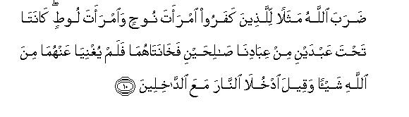
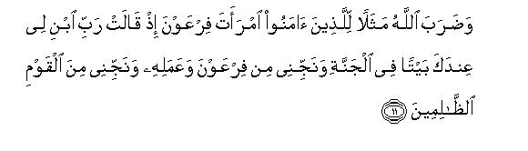
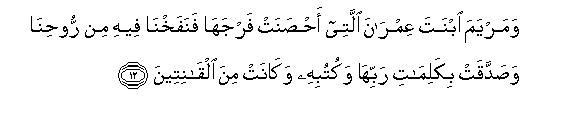
[10-12] Allah cites for the disbelievers the example of the wives of Noah and Lot. They were married to two of Our righteous servants, but they betrayed their husbands,24 and they could not avail theta anything against Allah. To both it was said, "Enter the Fire along with those who enter," And for the believers, Allah cites the example of the wife of Pharaoh, when she prayed, "My Lord, build for me, in Your Presence, a house in Paradise, and save me from Pharaoh and his work25 and deliver me from the wicked." And (Allah) cites the example of Mary, daughter of Imran,26 who had guarded her chastity.27 So We breathed into her body of Our Spirit,28 and she testified to the Words of her Lord and His Books, and she was one of the obedient.29
1This is not, in fact, a question but an expression of disapproval. The object is not to ask the Holy Prophet (upon whom be Allah's peace) why he had done so, but to warn him that his act to make unlawful for himself what Allah had made lawful is not approved by Allah. This by itself gives the meaning that nobody has the power to make unlawful what Allah has made lawful; so much so that the Holy Prophet (upon whom be peace) himself also did not possess any such power. Although the Holy Prophet did not regard this as unlawful as a matter of faith nor legally but only forbade himself its use, yet since he was not an ordinary man but Allah's Messenger, and his forbidding himself something could have the effect that his followers too would have regarded it as forbidden, or at least reprehensible, or the people of his community might have thought that there was no harm in forbidding oneself something his Allah had made lawful, Allah pointed it out to him and commanded him to refrain from such prohibition.
2This shows that in this case the Holy Prophet had not made a lawful thing unlawful because of a personal desire but because his wives had wanted him to do so, and he had made it unlawful for himself only in order to please them. Here, the question arises: why has Allah particularly made mention of the cause of making the thing unlawful besides pointing out the act of prohibition? Obviously, if the object had been to make him refrain from making a lawful thing unlawful, this could be fulfilled by the first sentences and there was no need that the motive of the act also should have been stated. Making mention of it in particular clearly shows that the object was not to check the Holy Prophet only for making a lawful thing unlawful, but along with that to warn the holy wives also to the effect that in their capacity as the Prophet's wives they had not understood their delicate responsibilities and had made the Holy Prophet do a thing which could lead to making a lawful thing unlawful.
Although it has not been mentioned ill the Qur'an as to what it was that the Holy Prophet had forbidden himself yet the traditionists and commentators have mentioned in this regard two different incidents, which occasioned the revelation of this verse. One of these relates to Hadrat Mariyah Qibiyyah (Mary, the Copt lady) and the other to his forbidding himself the use of honey.
The incident relating to Hadrat Mariyah is that after concluding the peace treaty of Hudaibiyah one of the letters that the Holy Prophet (upon whom be Allah's peace) sent to the rulers of the adjoining countries was addressed to the Roman Patriarch of Alexandria also, whom the Arabs called Muqawqis. When Hadrat Hatib bin Abi Balta a took this letter to him, he did not embrace Islam but received him well, and in reply wrote: "I know that a Prophet is yet to rise, but I think he will appear in Syria. However, I have treated your messenger with due honor, and am sending two slave-girls to you, who command respect among the Coptics. " (Ibn Sa'd). One of those slave-girls was Sirin and the other Mariyah (Mary). Un his way back from Egypt Hadrat Hatib presented Islam before both and they believed. When they came before the Holy Prophet (upon whom be peace) he gave Sirin in the ownership of Hadrat Hassan bin Thabit and admitted Hadrat Mariyah into his own household. In Dhil-Hijjah, A.H. 8 she gave birth to the Holy Prophet's son, Ibrahim. (Al-Isti'ab; Al-Isabah). This lady was very beautiful. Hafiz Ibn Hajar in Al-Isabah has related this saying of Hadrat 'A'ishah about her: "No woman's entry into the Holy Prophet's household vexed me so much as of Mariyah, because she was very beautiful and pleased him much. " Concerning her the story that has been narrated in several ways in the Hadith is briefly as follows:
One day the Holy Prophet (upon whom be peace) visited the house of Hadrat Hafsah when she was not at home. At that time Hadrat Mariyah came to him there and stayed with him in seclusion. Hadrat Hafsah took it very ill and complained of it bitterly to him. Thereupon, in order to please her the Holy Prophet vowed that he would have no conjugal relation with Mariyah in future. According to some traditions, he forbade Mariyah for himself, and according to others, he also swore an oath on it. These traditions have been mostly reported by the immediate successors of the Companions without mentioning any intermediary link. But some of these have been reported from Hadrat 'Umar,. Hadrat `Abdullah bin 'Abbas and Hadrat Abu Hurairah also. In view of the plurality of the methods of narration, Hafiz Ibn Hajar in Fath al-Bari has expressed the view that there is some truth in the story. But in none of the six authentic collections of the Hadith has this story been narrated. In Nasa'i only this much has been related from Hadrat Anas: "The Holy Prophet had a slave-girl with whom he had conjugal relations. Then, Hadrat Hafsah and Hadrat `A'ishah began to point out this to him repeatedly until he forbade her for himself. There upon, Allah sent down this verse: 'O Prophet. why do you make unlawful that which Allah has made lawful for you?"
The other incident has been related in Bukhari, Muslim, Abu Da'ud, Nasa'i and several other books of Hadith from Hadrat `A'ishah herself and its purport is as follows:
“The Holy Prophet (upon whom be peace) usually paid a daily visit to all his wives after the `Asr Prayer Once it so happened that he began to stay in the house of Hadrat Zainab bint-Jahsh longer than usual, for she had received some honey from somewhere as a gift and the Holy Prophet was very fond of sweet things; therefore, he would have a drink of honey at her house. Hadrat 'A'ishah states that she felt envious of this and spoke to Hadrat Hafsah, Hadrat Saudah and Hadrat Safiyyah about it and together they decided that whoever of them was visited by the Holy Prophet, she should say to him: 'Your mouth smells of maghafir ' Maghafir is a kind of flower, which gives out an offensive smell, and if the bee obtains honey from it, it is also tainted by the same odor. They all knew that the Holy Prophet was a man of very fine taste and he abhorred that he should emit any kind of unpleasant smell. There fore, this device was contrived to stop him from staying in the house of Hadrat Zainab and it worked. When several of his wives told him that his mouth smelt of Maghafir, he made a promise not to use the honey any longer. In one tradition his words are to the effect "Now, I will never have a drink from it: I have sworn an oath. " In another tradition he only said: "I will never have a drink from it," and there is no mention of the oath And in the tradition which Ibn al Mundhir, Ibn Abi Hatim, Tabarani and Ibn Marduyah have related from Ibn 'Abbas the words are to the effect: "By God, I will not drink it!"
Our eminent scholars regard this second version as correct and the first as unreliable. Imam Nasa'i says: "About honey the Hadith reported from Hadrat 'A'ishah is authentic, and the story of forbidding Hadrat Mariyah for himself by the Holy Prophet has not been narrated in a reliable way." Qadi 'Iyad says: "The truth is that this verse was sent down concerning honey and not Mariyah." Qadi Abu Bakr Ibn al-'Arabi; also regards the story about honey as correct and the same is the opinion of Imam Nawawi and Hafiz Badruddiu 'Aini. Ibn Humam writes in Fath al-Qadir "The story of the prohibition of honey has been narrated in Bukhari and Muslim from Hadrat `A'ishah who was herself a party to it; therefore, it is much more reliable."
Hafiz Ibn Kathir says: "The truth is that this verse was sent down about forbidding honey for himself by the Holy Prophet."
3That is, "Although the act of making a lawful thing unlawful only in order to please your wives was an act unbecoming of your high and responsible office, yet it was no sin, which might have entailed a punishment. Therefore, Allah has only pointed it out to you and corrected it, and has forgiven you for this error. "
4It means: "Act according to the method Allah has prescribed for absolution from oaths by expiation in Al-Ma'idah :89 and break your promise that you have trade to forbid yourself a lawful thing. " Here, an important legal question arises and it is this: Is this Command applicable to the case when a person has forbidden himself a lawful thing on oath, or is forbidding oneself a lawful thing by itself tantamount to swearing an oath, whether the words of the oath have been used or not'? The jurists in this regard have expressed different opinions:
One section of them says that mere forbidding oneself a lawful thing is not an oath. If a person without swearing an oath has forbidden himself a wife, or some other lawful thing, it is an absurd thing which does not entail any expiation, but he can resume without any expiation the use of the thing that he had forbidden himself. This is the opinion of Masruq, Sha'bi, Rabi'ah and Abu Salamah; and the same view is held by Ibn Jarir and all the Zahiris. According to them forbidding oneself something would be an oath only in case express words of oath are used when forbidding it for oneself. In this regard, their reasoning is that since the Holy Prophet (upon whom be peace) while forbidding himself a lawful thing had also sworn an oath, as has been reported in several traditions, Allah told him to act according to the method that had been appointed for absolving oneself from oaths.
The second group says that to forbid oneself something without using the words of oath is not an oath by itself, but the case of the wife is an exception. If a person has forbidden himself a garment, or an article of food, it is meaningless, and one can use it without expiation. But if concerning a wife or a slave-girl he has said: "I forbid myself an intercourse with her," she would not become unlawful and forbidden, but one would have to expiate the oath before going in to her. This is the opinion of the Shafe'is. (Mugni al-Muhtaj). And a similar opinion on this question is held by the Malikis. (Ibn al-'Arabi, Ahkam al-Qur an).
The third group says that to forbid oneself something is by itself an oath even if the words of oath have not been used. This is the opinion of Hadrat Abu Bakr. Hadrat 'A'ishah, Hadrat 'Umar, Hadrat 'Abdullah bin Mas'ud, Hadrat Zaid bin Thabit and Hadrat 'Abdullah bin 'Abbas (may Allah bless them all). Although from Ibn 'Abbas another opinion has been reported in Bukhari to the effect: "If a man has forbidden himself his wife, it is meaningless," yet it has been interpreted to mean that according to him this is not divorce but an oath which entails an expiation. For in Bukhari, Muslim and Ibn Majah, another saying of Ibn 'Abbas has been reported that to forbid oneself one's wife entails an expiation, and in Nasa'i the tradition is to the effect that when Ibn 'Abbas was asked his opinion on this, he said: "She is not forbidden to you, but you must pay the expiation." and in Ibn Jarir's tradition the words of Ibn 'Abbas are to the effect: "If the people forbid themselves what Allah has made lawful for them, they must expiate their oath." This same is the opinion of Hasan Basri, 'Ata, Ta'us. Suleman bin Yasar. Ibn Jubair and Qatadah, and the same has been adopted by the Hanafis. Imam Abu Bakr al-Jassas says: `The words of the verse lima tuharrimu do not indicate that the Holy Prophet (upon whom be peace) along with forbidding himself the lawful thing had also sworn an oath, therefore, one will have to admit that tahrim (to forbid oneself something) itself is an oath; for after it Allah made obligatory the expiation of the oath in connection with the prohibition." Farther on he writes again: 'Our companions (i.e. the Hanafis) regard tahrim as an oath in case it is not accompanied by the intention of divorce. If a person forbade himself his wife, he in fact said: "By God, I will not come near you," thus, he committed ila' (act of temporary separation! . And if he forbade himself an article of food. etc, he in a way said: "By God, I will not use that article." For Allah first said: "Why do you forbid that which Allah has made lawful?" and then said. "Allah has appointed a way to absolve you from your oaths." Thus, Allah has regarded tahrim as an oath, and the word tahrim in its meaning and legal effect becomes synonymous with an oath."
Here, for the benefit of the common man, it would be useful to tell what is the legal command according to the jurists in respect of forbidding oneself one's wife and forbidding oneself other things besides the wife.
The Hanafis say that if without the intention of divorce somebody forbade himself his wife, or swore an oath that he would not have conjugal relations with her, this would be ila (temporary separation), and in this cast he would have to expiate his oath before having the sexual relation. But if with the intention Of divorce he said: "You are unlawful to me," it will have to be ascertained what was his actual intention. If his intention was of three divorces, the three divorces will take place, and if the intention was of a lesser number, of one or two divorces, only one divorce will take place in either case. And if some body says: "I have forbidden myself whatever was lawful for me, this would not apply to the wife unless he said these words with the intention of forbidding himself the wife. Apart from the wife, one cannot use the thing O11e has forbidden oneself until one has expiated the oath. Badai as-Sana'i: Hedayah; Fath Al-Qadir,' al-Jassas, Ahkam al-Qur an.
The Shafe'is say that if one forbids oneself the wife with the intention of divorce or zihar, the intended thing would become effective, whether it is a revocable divorce or an irrevocable divorce, or zihar. And if a person used the words of tahrim with the intention of both divorce and zihar, he would be asked to choose one, or the other, for both divorce and zihar cannot be established at one and the same time. Divorce dissolves marriage but in case of zihar it continues and if without any intention the wife is forbidden, she would not become forbidden, but expiation of the oath would become necessary. And if another thing, apart from the wife, is forbidden, it would be meaningless; there is no expiation for it. (Mughni al-Muhtaj).
The Malikis say that if a person forbids himself anything other than the wife, it neither becomes forbidden nor entails an expiation. But if he says to the wife, "You are unlawful, or unlawful for me, or I am unlawful for you," this would amount to a triple divorce in any case whether this was said to a wife with whom marriage has been consummated, or to one with whom it has not yet been consummated, unless his intention was of less than three divorces. Asbagh says: 'If a person says: whatever was lawful for me, is unlawful, the wife also becomes forbidden unless he makes an exception of the wife." In al-Mudawwanah, distinction has been made between the wife with whom marriage has been consummated and the wife with whom it has not been consummated. If one forbids oneself the former, a threefold divorce will take place irrespective of the intention, but in case of the latter the same number of divorces would take effect as was intended, and if there was no intention of any particular number, it would be considered a triple divorce (Hashiyah ad-Dusuqi). Qadi Ibn al-'Arabi in his Ahkam al-Qur'an has cited three statements of Imam Malik: (1) That forbidding oneself the wife amounts to an irrevocable divorce; (2) that it amounts to three divorces; and (3) that in case of the wife with whom marriage has been consummated it amounts to three divorces, bat in case of the one with whom it has not been consummated, to only one divorce if one was intended Then he says: 'The correct thing is that forbidding oneself the wife amounts to one divorce only. for if the man uses the word divorce instead of calling her unlawfirl without specifying the number, only one divorce will take place."
Three different views in this regard have been reported from Imam Ahmad bin Hanbal: (1) That to forbid oneself the wife, or to make a lawful thing absolutely unlawful for oneself, is zihar, whether zihar was intended or not; (2) that this is an express allusion to divorce, and it amounts to pronouncing a triple divorce whether only one divorce was intended; and (3) that it is an oath, unless The man had the intention of divorce or zihar and in this case the same would take effect as was intended. Of these only the first one is the best known view among the Hanbalis. (Al-Insaf)
5That is, "Allah is your Master and Guardian of your affairs. He knows best in what lies your own good, and whatever Commands He has given, they are all based on wisdom. "The first thing means: "You are not independent in this world, but you are servant of Allah and He is your Master; therefore, none of you possesses any power to alter or change the ways and methods prescribed by Him; the best thing for you is to entrust your affairs to Him and continue to obey Him."
The second thing means that all the methods and laws that Allah has enjoined, are based on knowledge and wisdom, Whatever He has made lawful, has been made lawful on the basis of knowledge and wisdom and whatever He has made unlawful also has been made unlawful on the basis of knowledge and wisdom. Nothing has been made lawful or unlawful at random. Therefore, those who believe in Allah should understand that it is Allah Who is AII-Knowing and All-Wist and not they. and their well-being lies only in carrying out duly the Commands given by Him.
6Different things have been reported in different traditions, saying that the Holy Prophet had told such and such a thing to one of his wives in confidence, which she disclosed to another wife. But for us, in the first place, it is not right to investigate it, for it is on the disclosure of a secret that Allah is taking a wife to task it cannot therefore be right for us to inquire into it and try to uncover it. Secondly, in view of the object for which this verse was sent down, it is not at all important to know what the secret was. Had it any connection with the object of the discourse, Allah would Himself have mentioned it The real object for which this incident has been related in the Qur'an is to warn the Holy Prophet's wives and. through them, the wives of the responsible people among the Muslims not to be careless in the matter of guarding secrets. Had it been only a private and personal affair, as is generally the case between the husband and the wife in the world there was no need that Allah should have directly informed the Holy Prophet of it through revelation, and then did not rest content only with giving the information, but should also have recorded it in the Holy Book which the whole world has to recite forever. The reason why it was given such importance was that this wife was not the wife of an ordinary husband but of that illustrious husband, whom Allah had appointed to the office of the highest responsibility, who was locked in an incessant battle with the disbelievers, polytheists and hypocrites at all times and under whose leadership a fierce conflict was going on for establishing Islam in place of paganism. In the house of such an illustrious man there could be countless things which if not kept secret but disclosed before time, could harm the great mission which he was performing. Therefore, when a lady of the house happened to show this weakness for the first time in that she disclosed a secret that had been told her in confidence, to another (a member of her own household), the weakness was immediately pointed out to her, not secretly but openly in the Qur'an, so as to impart training in the guarding of secrets not only to the wives of the Holy Prophet but also to the wives of all responsible people of the Muslim community. In the verse the question whether the secret disclosed pertained to a matter of any consequence or not, and whether its disclosure could cause any harm to the mission or not, has been altogether ignored. What has been disapproved and pointed out in particular is that the secret was disclosed to another. The higher the position of responsibility a person holds the more dangerous would be the leakage of secrets from his house. No matter whether a thing is of any consequence or not, once a person becomes careless in the matter of guarding secrets, he may reveal important things as well as trivial matters.
7The word saghat in the original is from Baghy which means to swerve and to become crooked. Shah Waliyullah and Shah Rafi'uddin have translated this sentence thus: "Crooked have become your hearts." Hadrat 'Abdullah bin Mas'ud, 'Abdullah bin 'Abbas, Sufyan Thauri and Dahhak have given this meaning of it: "Your hearts have swerved from the right path." Imam Razi explains it thus: "Your hearts have swerved from what is right, and the right implies the right of the Holy Prophet (upon whom be Allah's peace)." And 'Allama Alusi's commentary is Although it is incumbent on you that you should approve what the Holy Messenger (upon whom he peace) approves and disapprove what he disapproves, yet in this matter your hearts have swerved from conformity with him and turned in opposition to him."
8The word tazahur means to cooperate mutually in opposition to another person, or to be united against another person. Shah Waliyullah has translated this sentence, thus: "If you mutually join together to cause distress to the Prophet. " Shah 'Abdul Qadir's translation is: "If you both overwhelm him." Maulana Ashraf 'Al Thanwi's translation urns: "And if you both continued to work thus against the Prophet. " And Maulana Shabbir Ahmad 'Uthmami has explained it thus: ,"If you two continued to work and behave thus (against the Prophet)."
The verse is clearly addressed to two ladies and the context shows that these ladies are from among the wives of the Holy Prophet (upon whom be peace) for in vv. 1-5 of this Surah the affairs concerning the Holy Prophet's wives only have been discussed continuously, and this becomes obvious from the style of the Qur'an itself. .As for the question who were the wives, and what was the matter which caused Allah's displeasure, the details are found in the Hadith. In Musnad Ahmad, Bukhari, Muslim, Tirmidhi and Nasa'i, a detailled tradition of Hadrat 'Abdullah bin 'Abbas has been related, which describes the incident with sane variation in wording. Ibn 'Abbas says:
"I had been thinking a long time to ask Hadrat 'Umar as to who were the two of the Holy Prophet's wives, who had joined each other against him, and about whom Allah sent down this verse: In tatuba.....; but I could not muster courage because of his awe-inspiring personality until he left for Hajj and I accompanied him. On our way back while helping him to perform ablutions for the Prayer at one place I had an opportunity to ask him this question. He replied: they were 'A'ishah and Hafsah. Then he began to relate the background, saying: "We, the people of Quraish, were used to keeping our women folk under strict control. Then. when we came to Madinah, we found that the people here were under the control of their wives, and the women of Quraish too started learning the same thing from them. One day when I became angry with my wife, I was amazed to see that she argued with me. I felt badly about her conduct. She said, 'Why should you feel so angry at my behavior? By God, the wives of the Holy Prophet (upon whom be peace) answer him back face to face,' (the word in the original is li yuraji nahu) and some one of them remains angrily apart from hire for the whole day. (According to Bukhari: the Holy Prophet remains angry and- apart from her the whole day). Hearing this I came out of my house and went to Hafsah (who was Hadrat `Umar's daughter and the Holy Prophet's wife). I asked her. Do you answer back to the Holy Prophet (upon whom be peace) face to face? She said: Yes. asked: And does one of you remain apart from him for the whole day (According to Bukhari: the Holy Prophet remains angry and apart from her for the entire day). She said: Yes. I said: Wretched is the one from among you, who behaves thus. Has one of you become so fearless of this that Allah should afflict her with His wrath because of the wrath of His Prophet and she should perish? So, do not be rude to the Prophet (here also the words are: la turaji-'i), nor demand of him anything, but demand of me whatever you desire. Do not be misled by this that your neighbor (i.e. Hadrat `A'ishah) is more beautiful and dearer to the Holy Prophet. After this I left her house and went to the house of Umm Salamah, who was related to me, and talked to her on this subject. She said: Son of Khattab, you are a strange man: you have meddled in every matter until you are now interfering in the affair between Allah's Messenger and his wives. She discouraged me. Then it so happened that an Ansari neighbor came to my house at night and he called out to me. We used to sit in the Holy Prophet's assembly by turns and each used to pass on to the other the news of the day of his turn. It was the time when we were apprehending an attack by the Ghassanids any time. On his call when I came out of my house, he said that something of grave significance had happened. 1 said: Have the Ghassanids launched an attack? He said: No, but something even more serious! The Holy Prophet (upon whom be peace) has divorced his wives. I said: Doomed is Hafsah (the words in Bukhari are: Raghima anfu Hafsah wa `Aishah). I already had a premonition of this."
We have left out what happened after this, how next morning Hadrat 'Umar went before the Holy Prophet and tried to appease his anger. We have described this incident by combining the traditions of Musnad Ahmad and Bukhari. In this the word muraj`at which Hadrat `Umar has used cannot be taken in its literal sense, but the context shows that the word has been used in the sense of answering back face to face and Hadrat `Umar's saying to his daughter: La turaji- `I Rasul Allah clearly has the meaning: Do not be impudent to the Messenger of Allah, Some people say that this is a wrong translation, and their objection is: Although it is correct to translate muraja `at as answering hack, or answering hack face to face, yet it is not correct to translate it as "bing impudent" . These objectors do not understand that if a person of a lower rank or position answers back or retorts to a person of a higher rank and position, or answers him back face to face this very thing is described as impudence. For example, if a father rebukes his son for something or feels angry at his behaviour, and the son instead of keeping quiet or offering an excuse, answers back promptly this could only he described as impudence. Then, when the matter is not between a father and a son, but between the Messenger of Allah and an individual of his community, only a foolish person could say that it was not impudence.
Some other people regard this translation of ours as disrespectful, whereas it could be disrespectful in case we had had the boldness to use such words in respect of Hadrat Hafsah from ourselves. We have only given the correct meaning of the words of .Hadrat 'Umar, and these words he had used while scolding and reproving his daughter for her error. Describing it as disrespectful would mean that either the father should treat his daughter with due respect and reverence even when scolding and rebuking her or else the translator should render his rebuke and reproof in a way as to make it sound respectful and reverent.
Here, what needs to be considered carefully is that if it was such an ordinary and trivial matter that when the Holy Prophet said something to his wives they would retort to Him, why was it given so much importance that in the Qur'an Allah administered a severe warning directly to the wives themselves? And why did Hadrat 'Umar take it as such a grave matter that first he reproved his own daughter, then visited the house of the other wives and asked them to fear the wrath of Allah? And, about all, was the Holy Prophet (upon whom be peace) also so sensitive that he would take offense at minor things and become annoyed with his wives, and was he, God forbid, so irritable that once having been annoyed at such things he had severed his connections with all his wives and retired to his private apartment in seclusion? If a person considers these questions deeply, he will inevitably have to adopt one of the two views in the explanation of these verses Either on account of his excessive concern for reverence for the holy wives he should not at all mind if a fault is imputed to Allah and His Messenger, or else he should admit in a straightforward way that at that time the attitude and behavior of these holy wives has actually become so objectionable that the Holy Prophet (upon whom be peace) was justified in becoming annoyed over it, and more than that, Allah Himself was justified that He should administer a severe warning to the wives on their unseemly behavior and attitude.
9That is, "You would only harm yourselves if you upheld and supported each other against the Messenger of Allah (upon whom be Allah's peace), for none could succeed against him whose Protector was Allah and who had Gabriel and the angels and all the righteous Believers on his side. "
10This shows that the fault did not lie only with Hadrat 'A'isha and Hadrat Hafsah but the other wives also had some share in it. That is why, after them, all the other wives too, have been warned in this verse. No light has been thrown on the nature of the error in the Qur'an. However, some details are found in the Hadith, which we shall relate below.
In Bukhari, a tradition has been reported from Hadrat Anas, saying that Hadrat 'Umar said: "The Holy Prophet's wives because of their mutual envies and rivalries had utterly displeased him. At this I said to them: It may well be that if the Holy Prophet divorced you, Allah would give him in your place better wives than you. " Ibn Abi Hatim has, on the authority of Hadrat Anas, reported the statement of Hadrat Umar in these words: "I was informed that a discord had been created between the Holy Prophet (upon whom be peace) and his wives. At this I went to each of them and asked them to refrain from vexing the Holy Prophet; otherwise Allah would give him in their stead better wives than them selves. So much so that when I went to the last of them (and according to a tradition of Bukhari, to Umm Salamah), she said to me: O `Umar, is not the Holy Prophet (upon whom be peace) himself enough to admonish his wives? Then why should you come out to counsel them? This made me quiet, and after this Allah sent down this verse.'
In Muslim, Hadrat `Abdullah bin 'Abbas has related that Hadrat 'Umar said to him: "When the Holy Prophet (upon whom be Allah's peace) separated himself from his wives, I went to the Mosque and found the people worried and upset and playing with pebbles and saying to one another: 'The Holy Prophet (upon whom be peace) has divorced his wives.' After this Hadrat `Umar related his visiting the apartments of Hadrat 'A'ishah and Hafsah and admonishing them. then said: I went before the Holy Prophet (upon whom be peace) and said: Why do you feel upset with regard to your wives? If you divorce them, Allah is with you, all the angels and Gabriel and Michael arc with you, and I and Abu Bakr and all the Believers are with you. I thank Allah that seldom has it so happened that I said a thing and did not have hope from Allah that He would testify to what I said. So, after this these verses of Surah At-Tahrim were sent down. Then I asked the Holy Prophet: Have you divorced your wives'? He said: No. Thereupon I stood at the entrance of the Mosque and announced in a loud voice: The Holy Prophet has not divorced his wives."
The traditions related in Bukhari from Hadrat Anas and in Musnad Ahmad from Hadrat 'Abdullah bin `Abbas, Hadrat 'A'ishah and Hadrat Abu Hurairah say that the Holy Prophet had pledged to remain away from his wives for a month and he retired in seclusion to his apartment. When 29 days passed, Gabriel carne and said; "You have fulfilled your oath: a month has come to completion."
Hafiz Badruddin 'Aini in 'Umdat al-Qari has related this on the authority of Hadrat 'A'ishah: The wives of the Holy Prophet had become divided into two parties. one party consisted of Hadrat 'A'ishah herself and Hadrat Hafsah. Hadrat Saudah and Hadrat Safiyyah, and the other of Hadrat Zainab, Hadrat.Umm Salamah and the rest of the wives.
These traditions indicate to some extent the conditions ,that existed in the Holy Prophet's domestic life at that time, which made it necessary that Allah Almighty should intervene and reform the attitude of the holy wives. Although the wives were the best ladies of society, yet they were human beings and were not tree from human weaknesses. Sometimes when it became difficult for them to lead a life of continuous poverty and hardship, they would become restive, impatient and would start pressing the Holy Prophet for better maintenance. At this Allah sent down vv. 28-29 of Surah Al-Ahzab and admonished them to the effect: 'If you seek the world and its adornments,.our Messenger will give you of these and send you of in a good way. But if you seek Allah and His Messenger and the Hereafter, you should bear up against the hardships with patience, which you might have to face when living with the Messenger." (For details, see E.N. 41 of Surah Al-Ahzab and the Introduction to it). Then on account of the feminine nature they sometimes happened to behave in a way, which though not unusual in everyday human life, did not go well with the unique dignity and great responsibilities of the house to which Allah had given them the honor to belong. So, when it was apprehended that those things might embitter the Holy Prophet's domestic life and might even adversely affect the great mission that Allah had entrusted to him, He sent down this verse in the Qur'an, and reformed them so that the holy wives may realize the responsibilities of the position and rank which they had attained as the life-companions of the Last Messenger of Allah, and should not regard themselves as ordinary women and their household as a common household. The very first sentence of this verse was such as might have caused Their hearts to shudder. There could be no severer warning for them than ,this: `It may well be that if the Prophet divorces all of you, Allah will give him in your place better wives than yourselves." In the first place, even the thought of being divorced by the Prophet (upon whom be Allah's peace) was unbearable for them: more than that, this would deprive them of the honor of being Mothers of the Believers, and the other women whom Allah would give as wives to the Prophet would be better than them, After this it was no longer possible for the holy wives to behave in a way as would have occasioned a reproof from Allah. That is why we find only two places in the Qur'an where these select and distinguished ladies have been administered a warning, in Surah Al-Ahzab and here in Surah At-Tahrim.
11In the places where the words Muslim and mu min have been used together, Muslim means the one who carries out Divine commands practically, and mu min the one who believes sincerely and truly Thus, the foremost quality of the best Muslim wives is that they should be believing in Allah and His Messenger and His Religion (din) sincerely and also practically following Allah's Religion in their morals, habits, customs and conduct.
12"Obedient" has two meanings and both are implied here
(1) They are obedient to Allah and His Messenger:
(2) they are obedient to their husbands.
13The word when used as attribute of a man does not imply the one who offers repentance only once but the one who continues to implore Allah again and again for the forgiveness of his mistakes, whose conscience is alive and active, who is always a are of his weaknesses and errors and is penitent for them. Such a person never feels proud, arrogant and conceited, but is gentle and clement by nature.
14A worshiper can never be so heedless of God as a non-worshiper. This also helps much in making a woman a good wife. Being devout she adheres to the bounds set by Allah, recognizes and discharges the rights of others and keeps her faith fresh and alive at all times. Because of these qualities she can better be expected that she would not reject obedience to Divine Commands.
15The word saihat in the original has been interpreted by several companions and large number of their successors to mean the same as sa imat (those given to fasting). The reason why the word siyahat journeying has been used for fasting is that in the ancient times journeys were mostly undertaken by the monks and ascetics, who had no provisions and had to go without food till they got something to eat from somewhere. On that account fasting also is a kind of asceticism, for a faster has to remain hungry until the time of breaking the fast. Ibn Jarir in his Commentary of At-Taubah 12 has cited a saying of Hadrat 'A'ishah, saying: "The journeying (i.e. asceticism) of the Ummah is fasting. Here, making mention of fasting as an attribute of the pious wives does not mean that they observe the obligatory fasting month of Ramadan only but that they observe voluntary fasts also besides the obligatory fasts.
Addressing the holy wives Allah's saying: "If the Holy Messenger divorces all of you, Allah will give him in your place better wives who will have this quality" does not mean that the wives were not virtuous, but it means; "Give up your wrong conduct which is causing so much distress to the Holy Prophet; instead, pay attention to developing in yourselves these noble qualities to the highest degree.'
16This verse tells that a person's responsibility is not confined to making effort to save himself from the punishment of God but it is also his responsibility that he should so educate and train to the best of his ability members of his family also to become Allah's favorite servants, who have been entrusted to his care in the natural process of life; and if they might be following a path to Hell, he should try. as far as he can, to correct them. His concern should not only be that his children should lead a happy and prosperous life in the world but; more than that, he should be anxious to see that they do not become fuel of Hell in the Hereafter. According to a tradition reported in Bukhiiri by Hadrat `Abdullah bin 'Umar, the Holy Prophet (upon whom be peace) said: "Each one of you is a herdsman and is accountable with regard to his herd: the ruler is a herdsman and is accountable with regard to his subjects; the man is a herdsman of his family and is accountable with regard to them; and the woman is a herdsman of her husband's house and his children and is accountable with regard to them."
Whose fuel...stone" probably implies coal. Ibn Mas' ud, Ibn 'Abbas, Mujahid, Imam Muhammad al-Baqir and Suddi say that this will be brimstone.
17That is, they will enforce on every culprit precisely the same punishment which they will be commanded to enforce on him without making any alteration in it, or showing any pity for him.
18The style of both these verses contains a severe warning for the Muslims. In the first verse the Muslims have been addressed and told that they should save themselves and their households from the dreadful punishment; in the second that this will be said to the disbelievers while subjecting them to punishment in Hell. This by itself gives the meaning that the Muslims in the world should avoid adopting that conduct and behavior in consequence of which they may have to meet with the fate as the disbelievers in the Hereafter.
19Literally, "taubat an-nasuh-an "may either mean that one should offer such true repentance as may have no tinge of pretense and hypocrisy in it, or that one should wish one's own self well and repenting of sin should save oneself from the evil end, or that one should so adorn and improve one's life after repentance as to become a cause of admonition for others, and seeing his example others also may reform themselves accordingly. These are the meanings of taubat an-nasuh which- are indicated by its literal sense. As for its religious meaning, its explanation is found in the Hadith which Ibn Abi, Hatim has related on the authority of Zirr bin Hubaish. He says: "When I asked Hadrat Ubayy bin Ka'b the meaning of taubat an-nasuh, he said that he had asked the Holy Prophet (upon whom be peace) the same question, and he had replied: 'It implies that when you happen to commit an error, you should feel penitent for it, then should implore Allah for forgiveness remorsefully, and then should refrain from committing the same error again." This same meaning has been reported from hadrat 'Umar. Hadrat 'Abdullah bin Mas'ud and Hadrat 'Abdullah bin `Abbas also, and in a tradition Hadrat 'Umar has defined taubat an-nasuh, thus: “After offering repentance one should not even think of committing the sin, not to speak of repeating it." (Ibn Jarir) Hadrat 'Ali once heard a desert Arab chanting the words of repentance and forgiveness quickly and mechanically and remarked: “This is the repentance of the liars.” The man asked: “What is true repentance?” Hadrat 'Ali replied: “It should be accompanied by six things:
(1) You should feel penitent for the wrong you have done: (2) you should carry out the duties that you have ignored; t3) restore the rights that you have usurped; (4) ask forgiveness of him whom you have wronged; (S) make a resolve not to repeat the sin again; and (6) consume yourself in obedience to Allah as you have so far been consuming it in wrongdoing, and cause it to taste the bitterness of obedience as you have so far been causing it to enjoy the sweet taste of disobedience and sin. “ (Al-Kashshaf)
In connection with repentance there are some other points also which should be well understood: (1) That repentance, in fact, is to show remorse for an act of disobedience only because it is a disobedience of Allah; otherwise to make a resolve to refrain from a sin because it is harmful for health, for instance, or it is likely to cause defamation or financial loss, is no repentance; (2) that man should offer repentance as soon as he realizes that he has committed disobedience of Allah and should compensate for it without delay in whatever form possible and should not defer it in any way; (3) that violating one's repentance again and making a jest of repentance and repeating the sin again and again of which one has repented, is a proof of the falsity of one's repentance, for the essence of repentance, is penitence, and breaking one's repentance repeatedly is a sign that it has not been motivated by penitence; (4) that if the person who has repented sincerely and resolved not to repeat the sin again, happens to repeat it once again because of human weakness, it will not revive his past sin: however, he should offer a fresh repentance for the latter sin sod should resolve more firmly that he would not commit the sin in future; (5) that it is not necessary to renew one's repentance again every time one remembers the disobedience committed in the past, but if one's self derives pleasure from the remembrance of the past, sinful life, one should offer repentance again and again until the remembrance of the sins causes remorse instead of pleasure and enjoyment. For the person who has actually repented of disobedience because of fear of God cannot derive pleasure from the thought chat he has been disobeying God. His deriving pleasure from it is a sign that fear of God has not taken root in his heart.
20The words of the verse deserve deep consideration. It has not been said chat if you repeat, you will surely be forgiven and will certainly be admitted to Paradise, but that: "If you offer true repentance, it may well be that Allah will treat you kindly." It means that it is not incumbent upon Allah to accept the repentance of the sinner and to grant him Paradise instead of subjecting him to punishment but it will be His kindness and compassion that He may forgive well as reward His servant. One should have hope of His forgiveness, but one should not commit a sin with the confidence that one will achieve forgiveness by repentance.
21That is, “He will not allow the reward of their good deeds to go to waste. He will not let the disbelievers and the hypocrites taunt the believers that they had gained nothing n spite of their worship. Humiliation will be the fate of the rebels and the disobedient and not of the faithful and obedient.”
22When this verse is read along with w. 12-13 of Surah AI-Hadid, it becomes clear that the running on of the light before the believers will take place when they will be proceeding towards Paradise from the Plain of Resurrection. There it will be pitch dark all around and those who will have been condemned to Hell, will be groping; about in it; the light will only be with the believers by which they will be traveling on their way. On this critical occasion, hearing the wailings and groanings of those groping in the dark the believers will be feeling terror stricken. In view of their past errors and short-comings they will be afraid lest they too should be deprived of their light and made to grope about like those-wretched people. Therefore, they will pray: "O our Lord, forgive us our sins and let our light remain with us until we reach Paradise." Ibn Jarir has cited Hadrat Abdullah bin 'Abbas as explaining the meaning of Rabbana-atimim lava nurana thus They will implore Allah Almighty that their light be allowed to remain with thetas and kept from going out until they have crossed the bridge across Hell." The commentary given by Hadrat Hasan Basri, Mujahid and Dahhak also is almost the same. Ibn Kathir has cited their this saying: ¦When the believers see that the hypocrites have been deprived of the light, they will pray to Allah for the perfection of their light." (For further explanation, see E.N. 17 of Surah Al Hadid).
23For explanation, see E. N . , 82 of Surah At-Taubah.
24This betrayal" was not in the sense that they had committed an indecency but in the sense that they did not follow the Prophets Noah and Lot on the way of faith but sided with their enemies against them. Ibn 'Abbas say: “No Prophet's wife has ever been wicked and immoral The betrayal of these two women in fact was in the matter of faith and religion: they did not acknowledge the religion of the Prophets Noah and Lot. The Prophet Noah's wife used to convey news about the believers to the wicked of her people, and the Prophet Lot's wife used to inform the immoral people about those who visited him in his house. "(Ibn Jarir).
25From Pharaoh and his work : from the evil end that Pharaoh would meet in consequence of his evil deeds.
26It may be that the name of Mary's father was Imran, or she may have been called "daughter of 'Imran" because she belonged to the family of 'Imran.
27This is a refutation of the accusation by the Jews that the birth of Jesus was, God forbid, the result of a sin of his mother. Their same accusation has been called a monstrous calumny" in An-Nisa`: 156. (For explanation, see E.N. 190 of An-Niasa').
28That is, without her having any connection with a man, Allah breathed into her womb a Spirit from Himself. (For explanation, see E.N.'s 212, 213 of An-Nisa' and E.N. 89 of Al-Anbiya').
29For the explanation of the object for which these three kinds of women have been cited as an example, see the Introduction to the Surah.